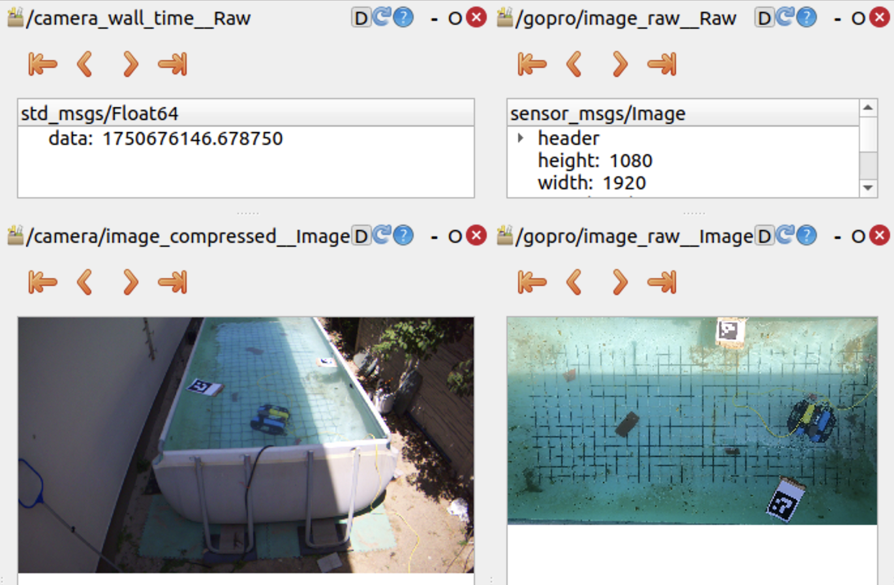
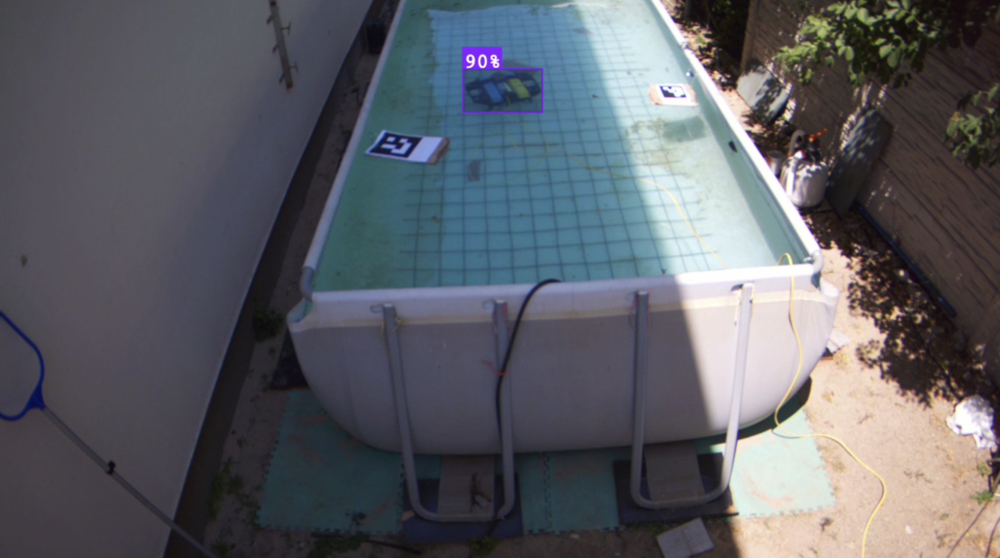
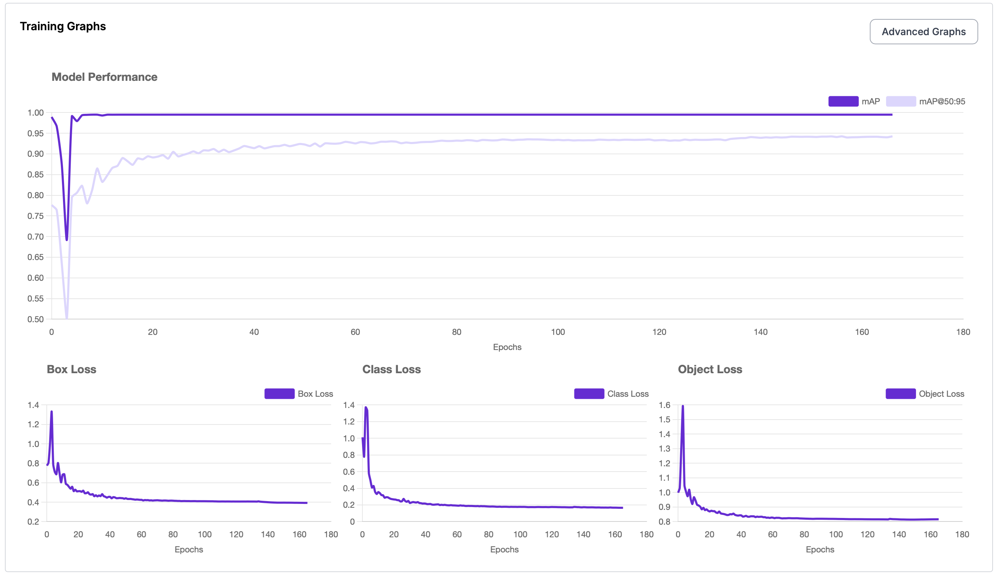

Platforms: Roboflow(link includes dataset) and Google Colab
In UVC Video Stream and GoPro Video Stream, I show the steps I went through to film the BlueROV from 2 different perspectives(BEV and front-view) at the same time to later compute the trajectory from the two POV’s and see they match.

To achieve that, I needed to create a dataset big enough to include all the possible representations of the ROV underwater
So I used these 2 separate datasets: 1, 2 to create the DATASET. Of course, combined with what I had. I watched too much Star Wars. Basically, I extracted every 10th frame from each POV and created my own dataset. Combined with these prior 2, I made one big enough for the whole application.
Roboflow is extraordinary in the sense that it already prepares and augments the data. For example, I set resizing images to 640x640 as preprocessing and blur, lightning, horizontal flips, etc. for augmentation. From ~4k images I got ~10k in the end with their workflow.
Also, I want to mention that I used 3 different perspectives of my own. Failed experiments count for something in the end.
The result:

This is what trained on Roboflow in one night. This might have been overkill with the parameters as it converged after ~40 epochs.

I tried training on my MacBook M3 PRO, but it was no use. As the GPU is not NVIDIA, it does not benefit from CUDA acceleration. I had to select device=mps, which stands for Metal Performance Shaders backend (Apple GPU). It does some acceleration, but definitely not enough for big datasets. This was not even that big. And the model was yolov8n (which stands for nano which has around ~3M parameters. The medium one consists of ~25M)
So what was my solution?
Google Colab. Simple as that.
I uploaded my dataset in Google Drive and then set up a python jupyter notebook which would run my model on a remote virtual machine hosted by GOOGLE.
They are actually kind enough to offer a Tesla T4 GPU unit for free to run your models. For me it was more than enough.
I trained for:
- epochs=30,
- imgsz=640,
- cache=True,
- device=cuda,
- batch=16
What do these parameters do?
The model will see the entire training set for
epochstimes. Around 20-50 should be enough. Risk of overfitting.Yolo expects images in 640x640 format.
YOLO will load all training images and labels into RAM at the start if
cacheis set on True. It speeds up training by avoiding repeated disk I/O.Set device on
cudaat the beginning of the script otherwise it will run on CPU. You don’t want that. GPU is less powerful but with more cores, which enable parallel computing.The model will process
batch_sizeimages at a time before updating weights. Lower if you run out of memory.
Remembering Deep Learning Fundamentals, let’s go over this example:
- I have 9357 total training images.
- I selected batch=16
- Then, during one epoch, the model will do 9357/16 = 585 batches (aka training steps). Each batch will load 16 images from the training set and continue the learning process.
- Training will go for 30 epochs × 585 batches = ~17,550 training steps
What I will stick with for the future:
Create my datasets with Roboflow
Train my models on Google remote units